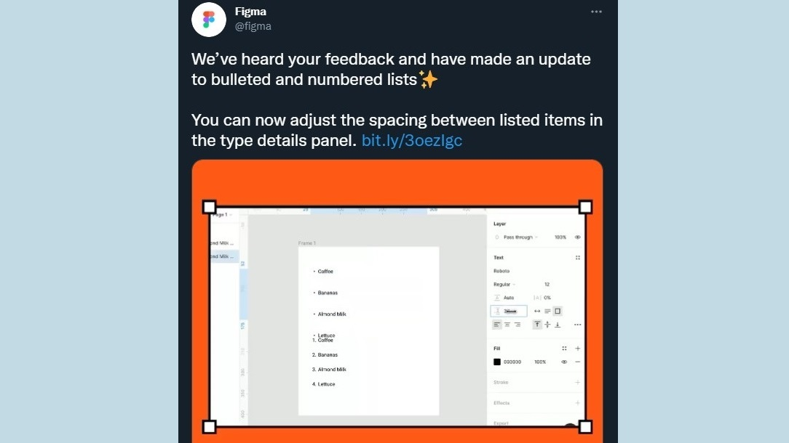
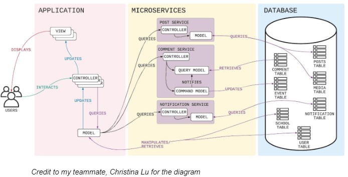
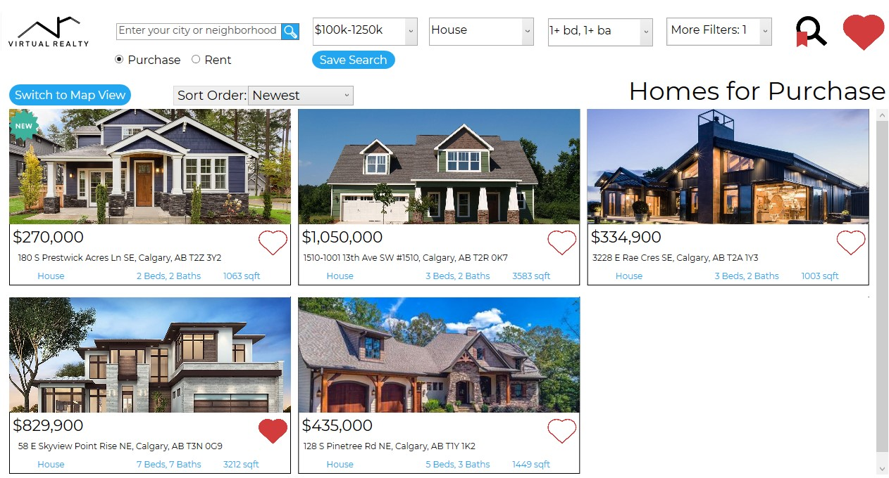
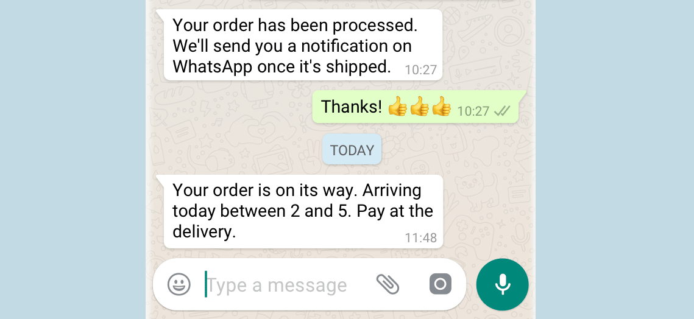

What I've Built
Selected Internship Work: Figma Lists
At Figma, I added a feature to access list settings (similar to paragraph spacing, line spacing, etc. but specifically for lists)! This has been a long-requested feature.
SENG 401 (Software Architecture) Project: UniversiTea
UniversiTea was built to show different software architectures, like microservices, CQRS, and Event Sourcing. With a heavy focus on good architecture, UniversiTea is a very scalable platform for students to talk about what's going on at their school.
CPSC 481 (Human-Computer Interaction) Project: VirtualRealty
In CPSC 481, I worked on a group project called VirtualRealty, a platform to buy and rent homes! It went through several iterations, starting with paper prototypes and ending with a functioning desktop app!
More Internship Work: WhatsApp Enterprise API V2 Read Receipts
I developed a feature to allow businesses to programatically mark messages as read in the Whatsapp Business API.